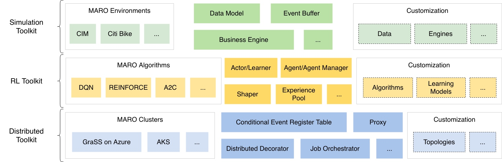

MARO平台介绍
多智能体资源优化(Multi-Agent Resource Optimization,MARO)平台是一个现实资源优化的强化学习服务实例。它可以应用于许多重要的工业领域，如物流中的集装箱库存管理，运输中的自行车重新定位，数据中心中的虚拟机供应，以及金融中的资产管理。除了强化学习(RL)，它还支持其他规划/决策机制，如运筹学。
MARO的关键组成部分:
仿真工具包:它提供了一些预定义的场景，以及用于构建新场景的可重用的组件。 RL工具包:它为RL提供了一个完整的堆栈抽象，例如智能体管理器、智能体、RL算法、学习者（learner）、参与者（actor）和各种类型的构造器。 分布式工具包:它提供分布式通信组件、用于消息自动处理、集群提供和工作编排的用户定义函数接口。 
本项目有微软开源，地址为： https://github.com/microsoft/maro